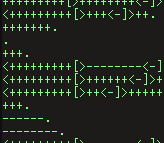
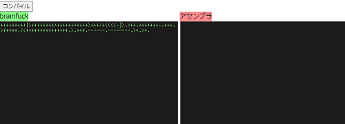
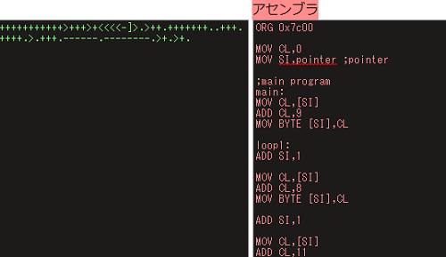
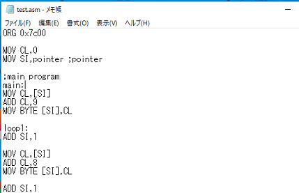
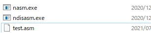
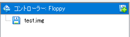
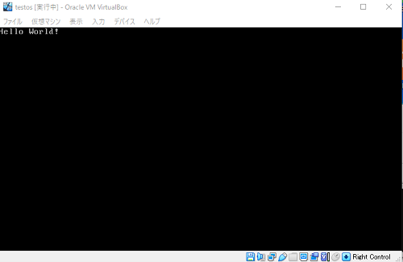

【難解プログラミング言語】brainfuckでOSを自作することができるコンパイラを作った
この記事は、本当にOS自作をしたいという方には向いていません。
こんにちは。
いきなりですが皆さんはbrainfuckと言うプログラミング言語はご存じでしょうか。（多分知ってる人しか来ない）
brainfuckとは難関プログラミング言語と言われる理解が難しい実用的でないプログラミング言語のことです。
まぁ、文字でだらだらと書いてもよくわからないので難解プログラミング言語の何が難解かはこれを見たらわかるでしょう。
+++++++++[>++++++++>+++++++++++>+++>+<<<<-]>.>++.+++++++..+++.
>+++++.<<+++++++++++++++.>.+++.------.--------.>+.>+.
ハイライトの色付けがごちゃごちゃになっているけどまあいいです。
brainfuckを理解していない人（or見たことない人）はこれは何の処理をしているのかよくわからないでしょう。
これはhello,worldを出力するソースコードです。
もうどこがはろーわーるどなのかよくわかりません。（´・ω・｀）
このサイトすごい分かりやすいです。僕もここのサイトで理解しました。
brainfuckのインタープリタ
http://www.usamimi.info/~ide/programe/brainfuck/brainfuck.html
まあここはbrainfuckを分かっている前提で進めます。
さて、こんな実用性が全くないネタ的なプログラミング言語ですが、
このプログラミング言語でOS開発が出来たら面白いなーと思って、brainfuckとアセンブラが好きな（変人）僕がbrainfuckでOSを作ることができるコンパイラを作ってしまいましたとさ。
作った
出来たものはこちらにあります。

brainfuckコンパイラ（OS開発用）
使い方は簡単でbrainfuckのところにソースコードを入力して、出力されたアセンブリをアセンブルするだけです。
試しにhello,worldをコンパイルしてアセンブルして起動までやってみます。
使う
+++++++++[>++++++++>+++++++++++>+++>+<<<<-]>.>++.+++++++..+++.
>+++++.<<+++++++++++++++.>.+++.------.--------.>+.>+.
①このコードをテキストエリアにコピペします。

②コンパイルボタンを押します。

③アセンブラのテキストエリアのコードをローカルのファイルにコピペします。（拡張子は.asm）

④NASMをダウンロードして、解凍します。NASMはこちらからダウンロードできます。
http://www.nasm.us/pub/nasm/releasebuilds/2.11.08/win32/nasm-2.11.08-win32.zip
⑤nasm.exeがあるフォルダに、さっき作ったファイルを移動します。

⑥そのディレクトリで以下のコマンドを実行します。
nasm.exe test.asm
⑦すると「test」というファイルが出力されると思うので名前を「test.img」に変更します。
⑧（ここではvirtualboxを使いますが、qemuや実機などでもできます。）
仮想フロッピーディスクにtest.imgを入れます。

⑨無事hello,wolrdが出力されました。

最後に
以上、難解プログラミング言語brainfuckでOSを作る記事でした。
この記事難解プログラミング言語やos開発に興味を持ってくれたら幸いです。
では。